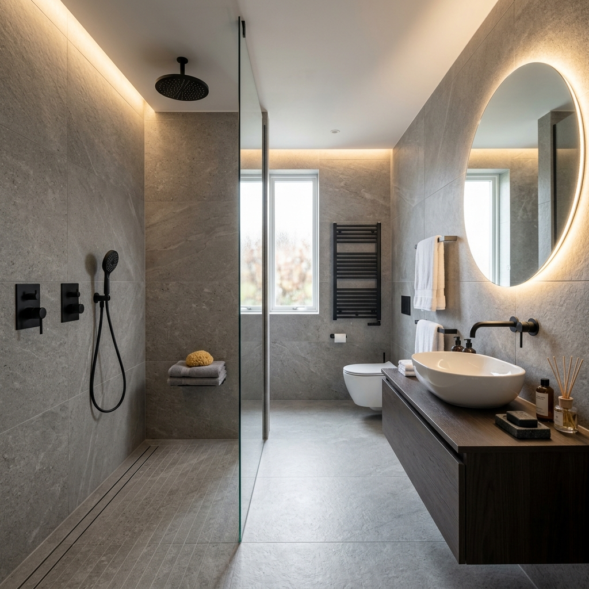

徹底解決漏水痛點，打造舒適、安全、美觀的五星級衛浴空間。
浴室是家中最容易發生漏水的地方。豈樂團隊特別強調 「三層防水工法」，從底層、中層到表層磁磚貼合，每一道工序都嚴格把關，確保 10 年以上不滲漏。

解決樓下漏水投訴，針對牆角、管線接口進行強化止漏。
TOTO、HCG 等各大品牌馬桶、臉盆、浴缸及暖風機安裝。
從泥作整平到磁磚拼貼，工法細膩，縫隙精準美觀。
專業工程團隊，為您打造舒壓的沐浴時光。